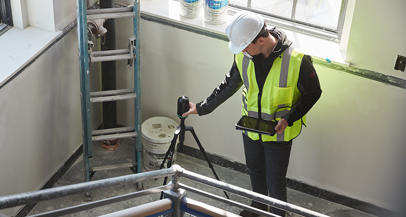
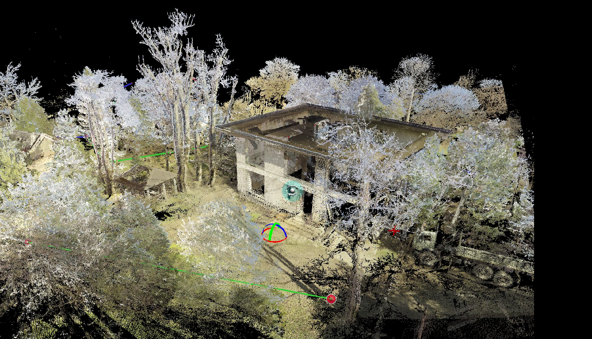
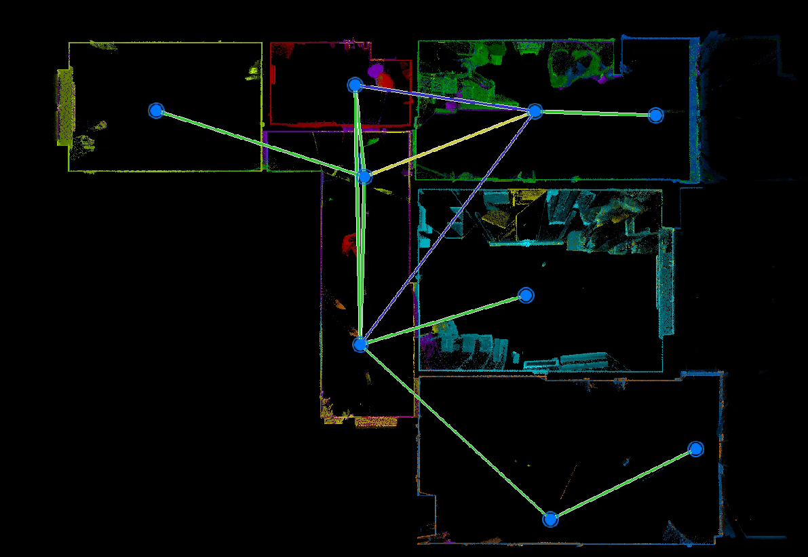
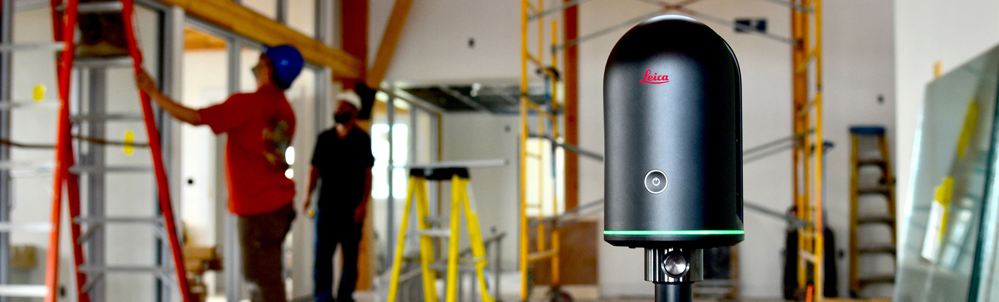
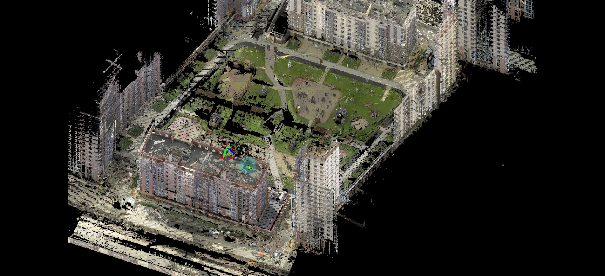
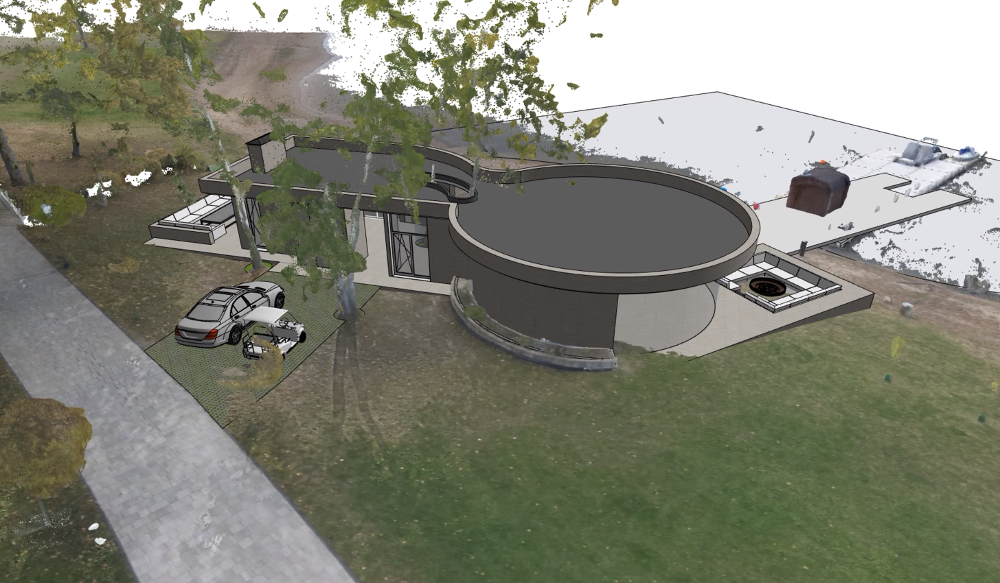
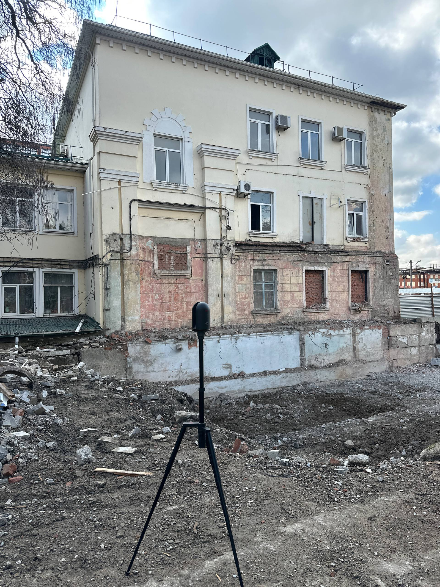
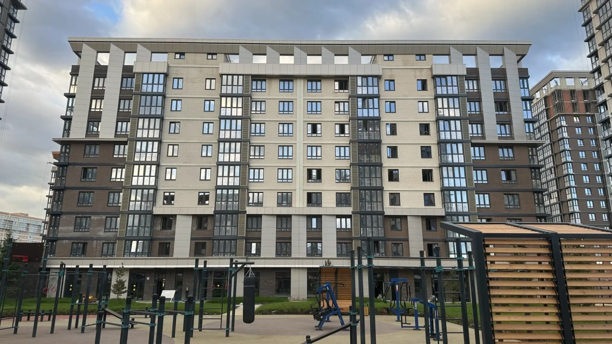
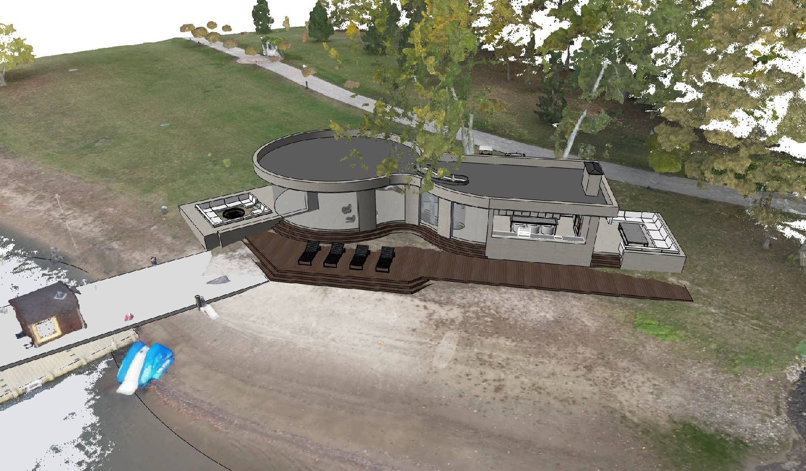

3D-сканирование и облако точек
Высокоточное лазерное сканирование объектов любой сложности. Получите облако точек с миллионами координат для расчётов, измерений и проектирования.
Проектная подоснова для любых задач — за один выезд на объект
Наземный лазерный сканер снимает 3D-фотопанораму и облако точек со скоростью до 360 000 измерений в секунду. Человеческий фактор исключён — вы получаете полностью достоверный цифровой образ объекта.
3D-сканирование и получение облака точек — основное направление
Берём объект любой сложности и объёма, включая объекты культурного наследия. Работаем на юге России.

3D-сканирование и облако точек
Основное направление нашей компании. Высокоточное оборудование быстро отсканирует любые архитектурные и инженерные объекты. Результат — облако точек с миллионами точек координат для любых расчётов и измерений. Можно получить в день выезда прямо на объекте.

Фотопанорамы 360°
Высочайшего качества снимки из точки установки сканера. Интерактивные визуализации объекта помогают оценить пространство и детали. Идеальны для документирования и презентаций.

Дополнительные услуги
Обмерные чертежи и 3D-моделирование выполняются нашей компанией-партнёром "5 стен". Мы предоставляем облако точек как основу для их работы. Свяжитесь с нами для уточнения деталей.
Весь спектр услуг
- 01Сканирование и 3D-съёмка
- 022D-чертежи в CAD-редакторах
- 033D-модели в BIM/CAD-системах
- 04Камеральная обработка облаков точек
- 05Обмерные планы и развёртки стен
- 06Паспорт фасада здания
- 07Обследование объектов
- 08Подоснова для проектирования инженерных сетей
- 09Реконструкция объектов культурного наследия (ОКН)
- 10Исполнительная документация
- 11Подсчёт объёмов работ
- 12Цифровой двойник объекта
Для чего нужно лазерное сканирование
Подготовка проектной документации
Быстро и точно получаем все размерные и визуальные данные. На их основе формируются 2D-планы и 3D-модель — уникальная подоснова для BIM-проектирования.
Реконструкция объектов культурного наследия
Цифровая модель обладает высокой детализацией и содержит всю размерную информацию. При проектировании учитываются все нюансы конкретного объекта.
Проектирование инженерных сетей
Данные содержат размеры существующих сетей и коммуникаций с привязкой к конструктивным элементам. Можно начать работу, не дожидаясь АР, и избежать ошибок.
Обследование объектов
Высокоточная 3D-модель позволяет, не покидая рабочего места, получить достоверные изображения и размеры любого фасада, помещения, конструкции или детали.
Сканирование vs традиционные методы
Стоимость лазерного сканирования сопоставима с традиционными методами — при этом данных вы получаете на порядок больше.
Четыре этапа до готового результата
Обращение
Сообщите нам о своей задаче по телефону или почте. Уточним параметры объекта и согласуем удобное время выезда.
Лазерное сканирование
Специалист ARCA выезжает на объект, проводит сканирование и получает данные в виде облака точек и фотопанорам 360°.
Обработка облака точек
После обработки вы получаете готовую цифровую модель объекта. Это может быть сделано прямо на объекте, в день съёмки.
Построение чертежей
Если нужны электронные чертежи, BIM-модель или исполнительная документация — подготовим их в кратчайшие сроки.
Фиксированные цены — планируйте бюджет заранее
Цифровой двойник
- Облако точек
- Фотопанорамы 360°
Вся размерная и визуальная информация об объекте.
Выбрать тариф3D-модель
- Облако точек
- Фотопанорамы 360°
- bim-модель
Готовая твердотельная САПР-модель вашего объекта.
Выбрать тариф3D-модель + чертежи
- Облако точек
- Фотопанорамы 360°
- 3D-модель
- 2D-чертежи
Модель + оформленные чертежи в DWG и PDF, развёртки стен.
Выбрать тарифТарифы актуальны для квартир и помещений на юге России. Стоимость фиксированная и не зависит от конфигурации помещений.
Для компаний, проектных бюро и дизайнеров действует сотрудничество со скидкой до 50%. Это доступный и качественный обмер, который помогает выделить ваш проект на фоне конкурентов.
Цены за м² для крупных объектов
| Вид услуги | 100–250 м² | 250–1 500 м² | 1 500–5 000 м² | > 5 000 м² |
|---|---|---|---|---|
| Сканирование и 3D-съёмка | ~ 50 ₽ | ~ 40 ₽ | ~ 30 ₽ | от 5 ₽ |
| Камеральная обработка облаков точек | ~ 20 ₽ | ~ 15 ₽ | ~ 10 ₽ | от 5 ₽ |
| 3D-модель в BIM/CAD-системах | ~ 30 ₽ | ~ 25 ₽ | ~ 20 ₽ | от 5 ₽ |
| 2D-чертежи в CAD-редакторах | ~ 25 ₽ | ~ 20 ₽ | ~ 15 ₽ | от 5 ₽ |
Не является офертой. Окончательную стоимость уточняйте при заказе — на неё влияют размер, заполненность и удалённость объекта.
Проекты
Примеры работ
Сертифицированные лазерные сканеры
Все наши 3D-модели и 2D-чертежи построены на основе данных с самых современных лазерных сканеров Leica. Приборы сертифицированы Ростестом и поверены Росаккредитацией.
Основное оборудование
Leica BLK360 — компактный лазерный 3D-сканер для профессиональной съёмки зданий, сооружений и инженерных объектов.
Производительность
Скорость сбора данных: до 360 000 измерений в секунду. Сканирование помещения среднего размера займёт от нескольких минут до часа.
Точность измерений
Максимальная погрешность: 4 мм на расстоянии 10 м; 7 мм на расстоянии 20 м. Идеально для обмеров и создания точных моделей.
Сертификация
Все сканеры сертифицированы Ростестом и поверены Росаккредитацией. Результаты измерений признаются для официальной документации.
Какова точность измерений?+
Допустимая погрешность прибора — 4 мм на 10 м от точки установки, 7 мм на 20 м. Сканеры сертифицированы Ростестом и поверены Росаккредитацией.
Что такое облако точек?+
Это цифровая трёхмерная модель объекта из множества точек с пространственными координатами — результат лазерного сканирования.
Какие объекты вы сканируете?+
Архитектурные объекты и помещения любой конфигурации, конструкции, инженерные сети, оборудование, ландшафт и многое другое.
Как открыть облако точек?+
Бесплатно — через Autodesk ReCap. Большинство продуктов Autodesk (AutoCAD, Revit, 3ds Max) поддерживают загрузку облаков как подложки.
В каких случаях сканирование невозможно?+
Для работы прибора нужна температура воздуха не ниже +5 °C и относительная влажность не выше 90%.
Что влияет на стоимость работ?+
Размер и высота объекта, вид работ, объёмно-планировочные параметры, заполненность, удалённость и особые условия проведения съёмки.
Видео о технологии
Смотреть видео о лазерном сканировании на YouTube